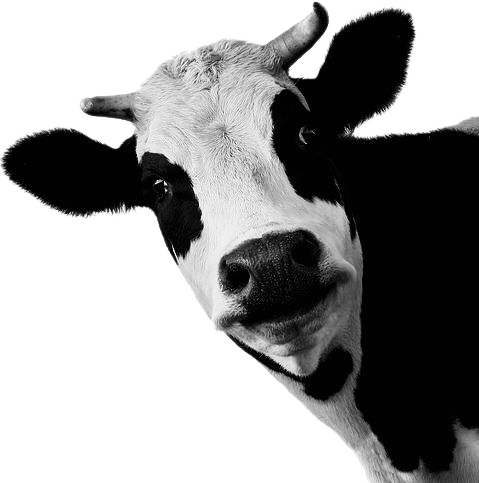
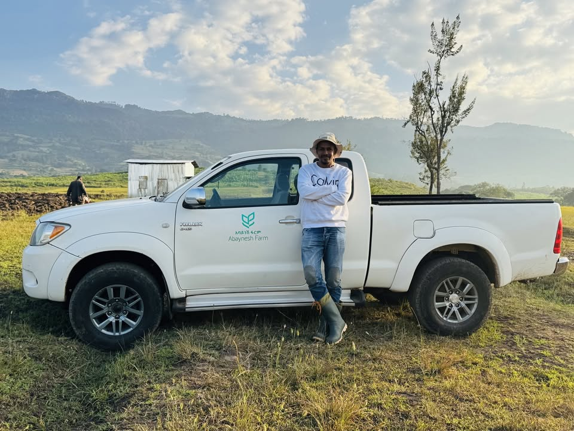
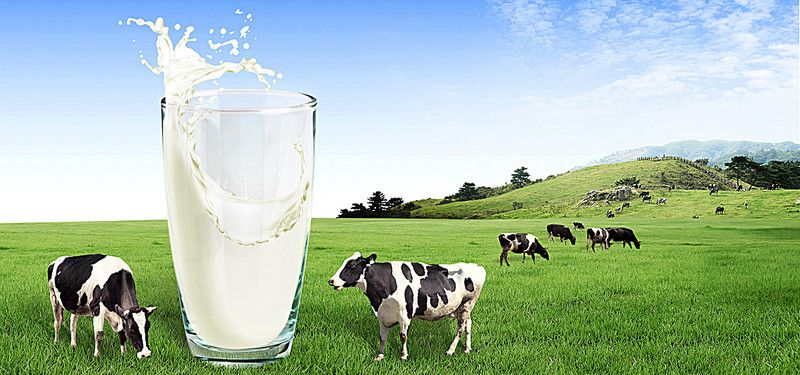

Farm Life
Closer to the land and the rhythms of nature.

.png)
WELCOME TO ABAYNESH
A little space to slow down, enjoy the countryside and share good moments. At Abaynesh Farm & Cafe, farm life, dairy and cafe experiences come together with a warm welcome.

Rooted in the countryside of Bonga.
Closer to the land and the rhythms of nature.
Discover the care behind our dairy experience.
A welcoming place to share simple pleasures.

A MOMENT FOR YOURSELF
Settle in, take a breath and enjoy a refreshing moment at Abaynesh Cafe. Good company and simple pleasures belong here.
Discover the freshness
Discover fresh milk as part of the Abaynesh experience, with care that begins at the farm.
EXPLORE THE FRESHNESSEnjoy a fresh juice and take a little time to appreciate the moment.
VISIT THE CAFEFRESH FROM ABAYNESH
From fresh dairy to refreshing cafe drinks, discover the simple pleasures that make a visit special.
A taste of the farm, brought to your everyday moments.
A bright and refreshing choice to enjoy at the cafe.
Visit the cafe to discover what is fresh today.
THE PEOPLE BEHIND THE FARM
Abaynesh Farm & Cafe began with a vision from entrepreneur Yonas Gezahegn. Named in loving honor of his mother, Abaynesh, the farm carries a personal story of family, perseverance and a commitment to building something meaningful.
What started with just four cows has grown into a community-driven agricultural enterprise in the lush surroundings of Bonga, Kaffa Zone. Its journey reflects a belief that farming can create opportunity while bringing people closer to the land.
The beginning of a family-inspired journey that grew into a wider agricultural enterprise.
Creating employment opportunities and contributing to the local community.
A school feeding initiative supplies milk and bread to hundreds of local students.

A PLACE TO COME TOGETHER
WE WOULD LOVE TO WELCOME YOU
Find your way to Abaynesh Farm & Cafe in Bonga. Discover the countryside, enjoy the cafe and spend a little time with us.
Bonga, Kaffa Zone,
Southwest Ethiopia